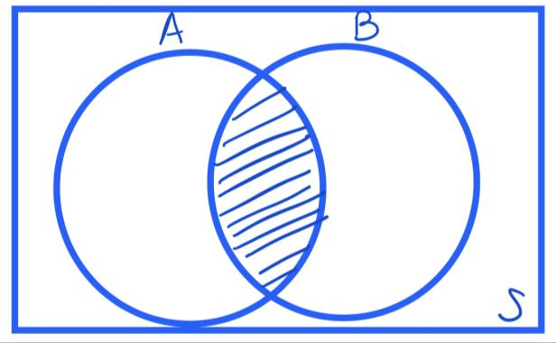
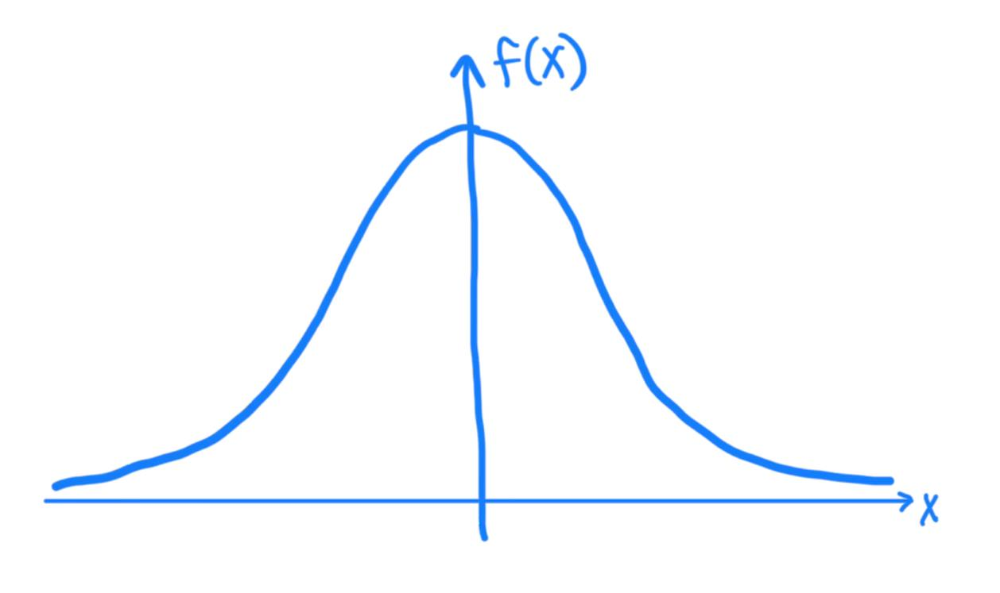

1 December 2026
How likely is a business event, and which other information changes that probability?
We move from last week’s frequencies to events, rules, two-way tables and conditional probabilities. We then use a smooth probability model for a continuous measurement.
ETF defines probability as a numerical value representing the chance, likelihood or possibility that an event will occur. It lies between 0 and 1.
An event is one or more outcomes of an experiment. A sample space S collects all possible simple outcomes. For one fair die roll, S={1,2,3,4,5,6} and P(S)=1.
A sample frequency can estimate a probability when the sample and observation process are suitable. Always name the population or process the estimate describes.
| Language | Notation | Meaning |
|---|---|---|
| A and B | A \cap B | Both events occur |
| A or B | A \cup B | At least one occurs, including both |
| Not A | A^c |
A does not occur |
The addition rule removes the double-counted intersection:
P(A\cup B)=P(A)+P(B)-P(A\cap B).
If A and B cannot occur together, they are mutually exclusive and P(A\cap B)=0.

Intersection of two events from ETF’s probability lecture.
The shaded overlap is A\cap B. When adding P(A) and P(B), that region is included twice, so the union formula subtracts it once.
Let A be “even” and B be “less than 5.” From the six equally likely outcomes:
A={2,4,6} and B={1,2,3,4}.{2,4}.The same result comes from listing {1,2,3,4,6}. ETF uses this check to distinguish or from and.
For a randomly selected business invoice, let A be “paid late” and B be “contains an error.” Write in words: A\cap B, A\cup B and A^c. If P(A)=0.12, P(B)=0.08 and P(A\cap B)=0.03, calculate the union. Explain the subtraction.
These are different ideas:
If two nonzero-probability events are mutually exclusive, observing one rules out the other. They are therefore not independent. We test independence through conditional probabilities after building a table.
A contingency table counts observations across two categorical variables. ETF Seminar Week 3 extends a one-way PivotTable into a two-way table.
For the Week 2 Marketing workbook, place Have Tried in rows and Income in columns. Count Person ID in Values. The row totals, column totals and grand total determine which denominator belongs to each question.
Marketing table and choose Insert > PivotTable.Have Tried to Rows, Income to Columns, and Person ID to Values as Count.Have Tried.COUNTIFS and one marginal count with COUNTIF.A table percentage without its denominator is not yet an interpretable probability.
A joint probability describes a pair of categories, the intersecting cell divided by the grand total. A marginal probability describes one variable, the relevant row or column total divided by the grand total.
ETF’s workshop asks for both “has not tried” and “earns above AUD 50,000 and has not tried.” The first is marginal; the second is joint. The words in the question point to different cells.
Using your PivotTable, estimate (1) P(\text{not tried}) and (2) P(\text{income above 50,000 and not tried}). State the numerator and the all-respondent denominator for each. Check one result with an Excel count formula.
ETF describes conditional probability as the probability of one event given information that another event has occurred:
P(A\mid B)=\frac{P(A\cap B)}{P(B)} =\frac{\text{count of both A and B}}{\text{count of B}},\qquad P(B)>0.
The condition, after the vertical bar, defines the smaller group. P(A\mid B) generally differs from P(B\mid A).
ETF Workshop Week 3 asks: among respondents who have not tried the product, what proportion earn above AUD 50,000?
Use the count of “not tried and above 50,000” as numerator. Divide by the not-tried row total. In a PivotTable, % of Row Total gives this when Have Tried is in rows. Say the denominator aloud before reading the percentage.
Find the proportion who have not tried the product among respondents earning above AUD 50,000. Change the denominator, not just the wording. Explain why this result need not equal the previous conditional probability.
For A = “has tried” and B = “lives alone,” add the two marginal counts and subtract their overlapping cell once. Divide the result by the grand total.
The same answer can be checked by counting every respondent who meets A or B. This is particularly useful when a business question combines two warning indicators.
Events A and B are independent if learning B does not change A’s probability:
P(A\mid B)=P(A), \quad\text{equivalently}\quad P(A\cap B)=P(A)P(B).
Compare the conditional “tried” rates across income categories with the overall “tried” rate. A sample difference suggests association; it does not establish causation or by itself constitute a formal test.
Choose two categories in Marketing. Report a joint probability, a conditional probability and an independence comparison. Name each denominator and finish with one cautious business sentence.
A histogram groups the measurements we actually saw. ETF Seminar Week 4 then introduces a smooth probability density f(x) to represent a proposed distribution of future or population values.
Area under the curve is probability. The total area is 1. A model can be useful for risk calculations, but first check whether its shape is credible for the business variable.

ETF’s smooth density schematic used to introduce continuous probability.
A Normal distribution is symmetric and bell-shaped, described by a mean and standard deviation. ETF writes X\sim N(\text{mean},\text{SD}). Mean, median and mode coincide. Roughly 68%, 95% and 99.7% fall within one, two and three SDs of the mean.
| Business question | Excel expression when X\sim N(\mu,\sigma) |
|---|---|
| Below x? | =NORM.DIST(x,mean,sd,TRUE) |
| Above x? | =1-NORM.DIST(x,mean,sd,TRUE) |
| Which x has cumulative probability q? | =NORM.INV(q,mean,sd) |
The fourth argument TRUE requests a cumulative probability. For a continuous variable, “less than” and “less than or equal to” have the same probability.
ETF Seminar Week 4 uses X\sim N(10,3) to illustrate the Excel function: P(X<5)=NORM.DIST(5,10,3,TRUE). The complement gives P(X>5).
Before pressing Enter, sketch which tail is needed. Check that a probability is between 0 and 1 and that a threshold below the mean has cumulative probability below 0.5.
ETF Workshop Week 4 assumes adult systolic blood pressure is Normal with mean 124 mmHg and SD 10 mmHg. In Excel, find the probabilities below 117 and above 140, then the reading that marks the highest 15%. State each event before choosing NORM.DIST or NORM.INV.
A standard Normal has mean 0 and SD 1. Standardisation puts unlike measurements on a common scale:
z=\frac{x-\mu}{\sigma}.
ETF introduces the t distribution because estimating an unknown population SD from a sample adds uncertainty. It resembles the standard Normal but has heavier tails for small degrees of freedom; as degrees of freedom grow, the two become close. Week 3 uses these critical values for intervals.
The ETF price example is right-skewed. A symmetric Normal curve may be a poor model for those raw prices. Use a stated Normal assumption when a problem gives it; otherwise inspect the histogram, possible outliers, units and sampling context.
A precise Excel probability from an unsuitable model can be misleading.
Business event → sample space or model → denominator or tail → Excel calculation → validation → plain-language interpretation.
Next week we ask how much a probability or mean estimated from one sample might change with another sample.